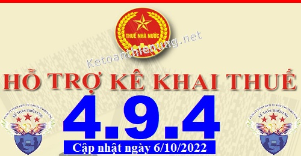
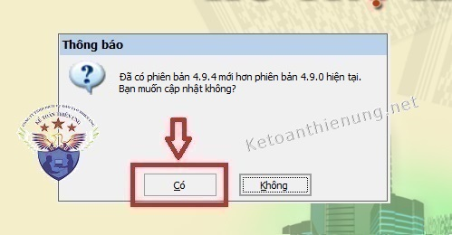
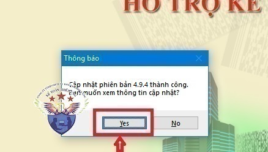

Phần mềm hỗ trợ kê khai thuế HTKK 4.9.4 mới nhất 2022 là Phần mềm HTKK 4.9.4 mới nhất ngày 06/10/2022 của Tổng cục thuế. Download phần mềm HTKK 4.9.4 miễn phí tại đây.
Ngày 06/10/2022 Tổng cục Thuế thông báo về việc Nâng cấp ứng dụng Hỗ trợ kê khai (HTKK) 4.9.4
TỔNG CỤC THUẾ THÔNG BÁO
V/v Nâng cấp ứng dụng Hỗ trợ kê khai (HTKK) phiên bản 4.9.4 cập nhật một số nội dung phát sinh
Tổng cục Thuế thông báo nâng cấp ứng dụng Hỗ trợ kê khai (HTKK) phiên bản 4.9.4 cập nhật một số nội dung phát sinh các mẫu biểu của Thông tư số 80/2021/TT-BTC và Thông tư số 40/2021/TT-BTC, cụ thể như sau:
1. Tờ khai thuế giá trị gia tăng (05/GTGT)
Cập nhật bỏ ràng buộc bắt buộc nhập doanh thu chưa có thuế giá trị gia tăng [21] của 1 trong 2 hoạt động tại mục “Kê khai nghĩa vụ thuế”.
2. Tờ khai thuế tài nguyên tạm tính đối với dầu khí (01/TAIN-DK)
Cập nhật khi kê khai tờ khai theo lần phát sinh thì ứng dụng thực hiện in đúng kỳ kê khai.
3. Danh sách số hiệu tài khoản thanh toán
Cập nhật cho phép kết xuất tờ khai trong trường hợp để trống dữ liệu của bảng “Danh sách số hiệu tài khoản thanh toán của khách hàng là người nộp thuế”.
4. Tờ khai thuế nhà thầu nước ngoài (01/NTNN)
Cập nhật chức năng <Nhập xml> hiển thị đủ thông tin “Tỷ lệ thuế GTGT” và “Tỷ lệ thuế TNDN”.
5. Tờ khai thuế thu nhập doanh nghiệp (05/TNDN)
Cập nhật ứng dụng cho phép kê khai tờ khai bổ sung lần 2 trong trường hợp đã tồn tại tờ khai lần 1.
6. Tờ khai cá nhân kinh doanh (01/CNKD)
Cập nhật nếu tích chọn tổ chức, cá nhân khai thuế thay, nộp thuế thay thì cho phép sửa [28b], [29b], [30b], [31b].
7. Tờ khai quyết toán thuế thu nhập doanh nghiệp (03/TNDN)
Cập nhật đối với loại chỉ tiêu “Cơ sở sản xuất khác tỉnh là nhà máy thủy điện nằm trên nhiều tỉnh” thì không tổng hợp thay đổi lên 01/KHBS.
8. Tờ khai thuế giá trị gia tăng (01/GTGT)
Cập nhật tại phụ lục 01-6/GTGT (dành cho CSSX): Bắt buộc nhập chỉ tiêu [14] hoặc [15]
9. Tờ khai thuế tiêu thụ đặc biệt (01/TTĐB)
Cập nhật ràng buộc tại phụ lục 01-3/TTĐB như sau:
+ Đối với dòng kê khai "Đơn vị phụ thuộc", "địa điểm kinh doanh": Bắt buộc nhập chỉ tiêu [09], [10].
+ Đối với loại chỉ tiêu "Nơi không có đơn vị phụ thuộc, địa điểm kinh doanh": Không bắt buộc nhập chỉ tiêu [09], [10].
10. Văn bản đề nghị hủy hồ sơ đề nghị hoàn thuế (01/ĐNHUY)
Bổ sung mẫu biểu kê khai Văn bản đề nghị hủy hồ sơ đề nghị hoàn thuế.
11. Cập nhật địa bàn hành chính trực thuộc tỉnh Bình Phước và tỉnh Cao Bằng.
Cập nhật xã Thành Tâm thành phường Thành Tâm, xã Minh Hưng thành phường Minh Hưng, xã Minh Long thành phường Minh Long, xã Minh Thành thành phường Minh Thành, thị trấn Chơn Thành thành phường Hưng Long, tỉnh Bình Phước.
Cập nhật xã Phong Nậm thành xã Phong Nặm, huyện Trùng Khánh, tỉnh Cao Bằng.
1. Tờ khai thuế giá trị gia tăng (05/GTGT)
Cập nhật bỏ ràng buộc bắt buộc nhập doanh thu chưa có thuế giá trị gia tăng [21] của 1 trong 2 hoạt động tại mục “Kê khai nghĩa vụ thuế”.
2. Tờ khai thuế tài nguyên tạm tính đối với dầu khí (01/TAIN-DK)
Cập nhật khi kê khai tờ khai theo lần phát sinh thì ứng dụng thực hiện in đúng kỳ kê khai.
3. Danh sách số hiệu tài khoản thanh toán
Cập nhật cho phép kết xuất tờ khai trong trường hợp để trống dữ liệu của bảng “Danh sách số hiệu tài khoản thanh toán của khách hàng là người nộp thuế”.
4. Tờ khai thuế nhà thầu nước ngoài (01/NTNN)
Cập nhật chức năng <Nhập xml> hiển thị đủ thông tin “Tỷ lệ thuế GTGT” và “Tỷ lệ thuế TNDN”.
5. Tờ khai thuế thu nhập doanh nghiệp (05/TNDN)
Cập nhật ứng dụng cho phép kê khai tờ khai bổ sung lần 2 trong trường hợp đã tồn tại tờ khai lần 1.
6. Tờ khai cá nhân kinh doanh (01/CNKD)
Cập nhật nếu tích chọn tổ chức, cá nhân khai thuế thay, nộp thuế thay thì cho phép sửa [28b], [29b], [30b], [31b].
7. Tờ khai quyết toán thuế thu nhập doanh nghiệp (03/TNDN)
Cập nhật đối với loại chỉ tiêu “Cơ sở sản xuất khác tỉnh là nhà máy thủy điện nằm trên nhiều tỉnh” thì không tổng hợp thay đổi lên 01/KHBS.
8. Tờ khai thuế giá trị gia tăng (01/GTGT)
Cập nhật tại phụ lục 01-6/GTGT (dành cho CSSX): Bắt buộc nhập chỉ tiêu [14] hoặc [15]
9. Tờ khai thuế tiêu thụ đặc biệt (01/TTĐB)
Cập nhật ràng buộc tại phụ lục 01-3/TTĐB như sau:
+ Đối với dòng kê khai "Đơn vị phụ thuộc", "địa điểm kinh doanh": Bắt buộc nhập chỉ tiêu [09], [10].
+ Đối với loại chỉ tiêu "Nơi không có đơn vị phụ thuộc, địa điểm kinh doanh": Không bắt buộc nhập chỉ tiêu [09], [10].
10. Văn bản đề nghị hủy hồ sơ đề nghị hoàn thuế (01/ĐNHUY)
Bổ sung mẫu biểu kê khai Văn bản đề nghị hủy hồ sơ đề nghị hoàn thuế.
11. Cập nhật địa bàn hành chính trực thuộc tỉnh Bình Phước và tỉnh Cao Bằng.
Cập nhật xã Thành Tâm thành phường Thành Tâm, xã Minh Hưng thành phường Minh Hưng, xã Minh Long thành phường Minh Long, xã Minh Thành thành phường Minh Thành, thị trấn Chơn Thành thành phường Hưng Long, tỉnh Bình Phước.
Cập nhật xã Phong Nậm thành xã Phong Nặm, huyện Trùng Khánh, tỉnh Cao Bằng.
------------------------------------------------------------------------
Bắt đầu từ ngày 06/10/2022, khi lập hồ sơ khai thuế có liên quan đến nội dung nâng cấp nêu trên, tổ chức, cá nhân nộp thuế sẽ sử dụng các chức năng kê khai tại ứng dụng HTKK 4.9.4 thay cho các phiên bản trước đây.

----------------------------------------------------------------------------
Download Phần mềm HTKK 4.9.4 tại đây:

Để cài đặt được HTKK 4.9.4, máy tính của NNT cần đáp ứng thông số sau:
- Hệ điều hành WinXP (SP2, SP3), Win 7 trở lên… (không hỗ trợ hệ điều hành iOS, Mac).
- Máy tính có cài .NET Framework 3.5 trở lên (có thể tải bộ cài .NET Framework 3.5 tại đây).
- Nếu máy tính sử dụng hệ điều hành Win 7 trở lên không phải cài đặt .NET Framework 3.5 mà chỉ cần kích hoạt .NET Framework 3.5 đã tích hợp sẵn theo tài liệu hướng dẫn cài đặt tại đây
- Hệ điều hành WinXP (SP2, SP3), Win 7 trở lên… (không hỗ trợ hệ điều hành iOS, Mac).
- Máy tính có cài .NET Framework 3.5 trở lên (có thể tải bộ cài .NET Framework 3.5 tại đây).
- Nếu máy tính sử dụng hệ điều hành Win 7 trở lên không phải cài đặt .NET Framework 3.5 mà chỉ cần kích hoạt .NET Framework 3.5 đã tích hợp sẵn theo tài liệu hướng dẫn cài đặt tại đây
-----------------------------------------------------------------------------------------------
- Mọi phản ánh, góp ý của tổ chức, cá nhân nộp thuế được gửi đến cơ quan Thuế theo các số điện thoại, hộp thư điện tử hỗ trợ NNT về ứng dụng HTKK do cơ quan Thuế cung cấp.
Tổng cục Thuế trân trọng thông báo./.
-----------------------------------------------------------------------
Trường hợp: Máy tính các bạn đã cài phần mềm HTKK 4.9.3 rồi -> Các bạn chỉ cần Bật phần mềm HTKK 4.9.3 đó lên -> Phần mềm sẽ hiển thị Thông báo cập nhật lên Phần mềm HTKK 4.9.4 -> Các bạn bấm nút "Có"

-> Tiếp đó đợi phần mềm chạy cập nhật là xong nhé:

Như vậy là các bạn đã nâng cấp xong Phần mềm HTKK 4.9.4 nhé
- Trường hợp phần mềm không hiển thị như trên thì các bạn gỡ phần mềm cũ ra -> Cài phần mềm HTKK 4.9.4 nhé.
- Trước khi gỡ nhớ "Sao lưu dữ liệu" nhé! (Mặc dù khi gỡ HTKK 4.9.3 ra, rồi cài lại HTKK 4.9.4 thì không bị mất dữ liệu, nhưng mình khuyên các bạn vẫn nên sao lưu tra trước khi gỡ nhé)
------------------------------------------------------------------------